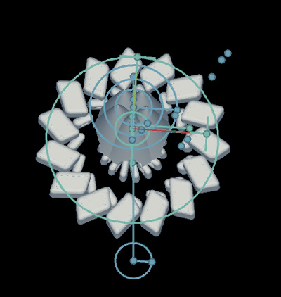

Antimony Experiment 1
I was curious to see what interesting things could happen in Antimony if I used one input to move various shapes along a path, rotate them around, and control some transforms.
Was thinking that maybe it would be useful for being able to generate some robot parts that are flexible-- if it goes from one extreme to another, then take the model that is in the middle and make it, and see if it can do the same thing in reality (move to the two extremes).
This didn’t really end up working the way I thought... but it made some interestingly weird looking models! Here is the .sb file


Vine vids
(warning: loud & obnoxious audio on these vines)Models
Mouse: 0.0
Mouse: 0.7
Mouse: 1.0
Mouse: 1.4
Making of
Built it up in four steps. First got the shapes to move along a path, then added more to it each time. There’s a .sb file for each step:
The ‘mouse’ input goes from 0-1.5, then just loops over again (abs(mouse%1.5)).
Here’s how a shape moves along a path for example. val is connected to the mouse output.
input('val', float)
x = val
y = -3 * pow(val-(1.5/2), 2) + 2
z0 = pow(y, 1.1)
z1 = z0 + 1
Then added more shapes and transforms to it to create something like this:
The model took too long to render on my laptop, but was able to get it to render on a different computer (Mac Pro at Apple Store).
Next
Probably made a mistake by trying to use too many shapes. Might try a simpler shape for next time. Still curious to see if the original idea could work...